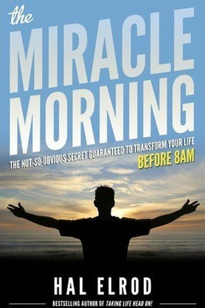

Library › Self-Improvement
The Miracle Morning — Summary & Key Lessons

The not-so-obvious secret guaranteed to transform your life (before 8 AM) — the routine that changed millions of mornings.
📖 OPEN THE FULL INTERACTIVE BREAKDOWN →🌐 Read it in Hindi, Hinglish, Gujarati, Tamil & 22 more languages — free, with audio.
💡 The Big Idea
Hal Elrod wrote this after a near-death car accident and a business collapse left him clinically depressed — then he discovered that changing his MORNING changed everything. His system: SAVERS — six practices done before the day starts: Silence (meditation/prayer), Affirmations (your goals, declared), Visualization (see the day going right), Exercise (move the body), Reading (feed the mind), Scribing (journal). One hour a day, and the day — and life — stop running you. 'How you wake up is how you live.'
🧠 The 5 Key Lessons
Lesson 1: Mornings Are the Lever
The Miracle Morning
Elrod's core claim: the first hour sets the tone for the next 23 — and for your life. Rushing out of bed, grabbing the phone, and starting reactive guarantees a reactive day. The miracle morning is a deliberate, structured start that puts YOU in charge before the world gets a vote. It's not about waking early for its own sake — it's about waking intentionally.
📖 Example: Elrod's own crash: after his accident, he hit bottom — until he committed to waking at 5 AM and running his SAVERS routine. Within months his depression lifted, his business revived, and the practice became his book and a global movement. Read the full example →
⚡ Do this: Set your alarm 30 minutes earlier tomorrow. Before touching your phone, do ONE quiet practice (silence, or writing). Repeat for a week and notice the difference in your days.
Lesson 2: SAVERS: The Six Practices
SAVERS
The system's acronym: Silence (5–10 min of stillness or meditation), Affirmations (statements of your goals and identity, spoken aloud), Visualization (see your day going perfectly), Exercise (any movement, even 5 minutes), Reading (feed your mind with growth books), Scribing (journal — gratitude, goals, lessons). Not all six must be full-length; even 1 minute each compounds.
📖 Example: Elrod's '1-minute each' variation exists for busy days — the point is the sequence, not the duration. His students report that even the mini-version changes the day: calmer starts, clearer goals, more energy. Read the full example →
⚡ Do this: Print SAVERS and try the mini-version tomorrow: 1 minute each of silence, affirmation, visualization, movement, reading, journaling. Ten minutes total.
Lesson 3: Affirmations Rewire Your Self-Image
Affirmations
Elrod's affirmation method isn't woo-woo: it's targeted self-instruction. Write affirmations that are specific, personal and in the present tense ('I am the founder of a business that serves 10,000 people,' 'I am disciplined and focused today'), say them with emotion, and they counter the negative autopilot loop your brain runs all day. Your brain believes what you tell it repeatedly.
📖 Example: Elrod's own affirmation practice pulled him from suicidal depression: he repeated daily statements about who he was becoming until his behavior caught up with the words — a process backed by research on self-affirmation and identity change. Read the full example →
⚡ Do this: Write 3 present-tense affirmations about who you're becoming. Say them aloud every morning for 30 days — with feeling, not mumbling.
Lesson 4: Visualization: Rehearse the Day
Visualization
Athletes have used visualization for decades: the brain rehearses what you vividly imagine. Elrod's version: each morning, close your eyes and run your day like a movie — see yourself calm in the meeting, focused on the project, patient with your family. When the real day arrives, your brain has already been there; it performs what it rehearsed.
📖 Example: Elrod cites the classic research (mental rehearsal improves physical performance nearly as much as practice) and his own experience: visualizing the perfect sales call made the real calls smoother, because the anxiety had already been rehearsed away. Read the full example →
⚡ Do this: Tomorrow morning, spend 3 minutes closing your eyes and 'watching' your day succeed — the meeting, the workout, the conversation. Rehearse the hard moment going well.
Lesson 5: Never Miss Twice
Habit Installation
Elrod's habit law — borrowed from the best habit science: if you miss a morning, never miss TWO in a row. One missed day is an accident; two is the start of a new (bad) habit. The miracle morning's power is compounding — and like all compounding, it works only with consistency. His '30-day life challenge' makes the routine a decision, not a mood.
📖 Example: Elrod's own tracking: he kept the streak alive through travel, illness and bad nights by shrinking the routine on hard days rather than skipping — 1 minute beats 0 minutes, and the identity ('I'm a morning person') survives. Read the full example →
⚡ Do this: Start a 30-day morning streak today. On bad days, shrink to 1 minute per practice — but never miss twice.
✅ 5-Step Action Plan
- Wake 30 minutes earlier; one quiet practice before phone, for a week.
- Run the 1-minute SAVERS mini-version daily.
- Write 3 present-tense affirmations; say them aloud for 30 days.
- Visualize tomorrow's day going well for 3 minutes each morning.
- Start the 30-day streak — never miss twice.
💬 Best Quotes from The Miracle Morning
- “The way you start each day determines how well you live your life.”
- “Your level of success will rarely exceed your level of personal development.”
- “Every day is a miracle — the key is to wake up to it.”
Interactive version: mark lessons as read, listen in your language, share quote cards.